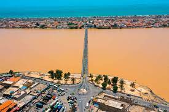

Saint-Louis est une ville située sur la côte nord-ouest du Sénégal. Elle est connue pour son architecture coloniale. La vieille ville se trouve sur l'île N'Dar du fleuve Sénégal. L'île est reliée au continent par le pont Faidherbe de 1865, conçu par Gustave Eiffel. La place Faidherbe possède des monuments anciens bien conservés, dont le palais du gouverneur et la cathédrale néoclassique. Le musée du CRDS est consacré à l'artisanat et à l'art traditionnel.